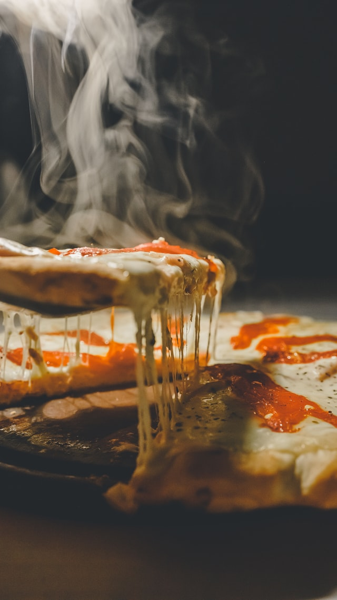

Pizza Recipe

Description
Pizza is a dish of Italian origin consisting of a usually round, flat base
of leavened wheat-based dough topped with tomatoes, cheese, and often
various other ingredients, which is then baked at a high temperature,
traditionally in a wood-fired oven.
Ingredients
- 1 (10 ounce) can refrigerated pizza crust dough
- 1 cup hummus spread
- 1.5 cups sliced bell peppers, any color
- 1 cup broccoli florets
- 2 cups shredded Monterey Jack cheese
Directions
- Preheat the oven to 475 degrees C (220 degrees C).
-
Roll out pizza crust and place on a pizza pan or baking sheet. Spread a
thin layer of hummus over the crust. Arrange sliced peppers and broccoli
over the hummus, and top with shredded cheese.
-
Bake in the preheated oven until the crust is golden brown and cheese is
melted in the center, 10 to 15 minutes. Slice and serve.
Nutritional Facts
Per Serving:
251 calories; protein 12.7g; carbohydrates 22.3g; fat 12.5g; cholesterol
25.1mg; sodium 495.2mg.
Back to Main Page